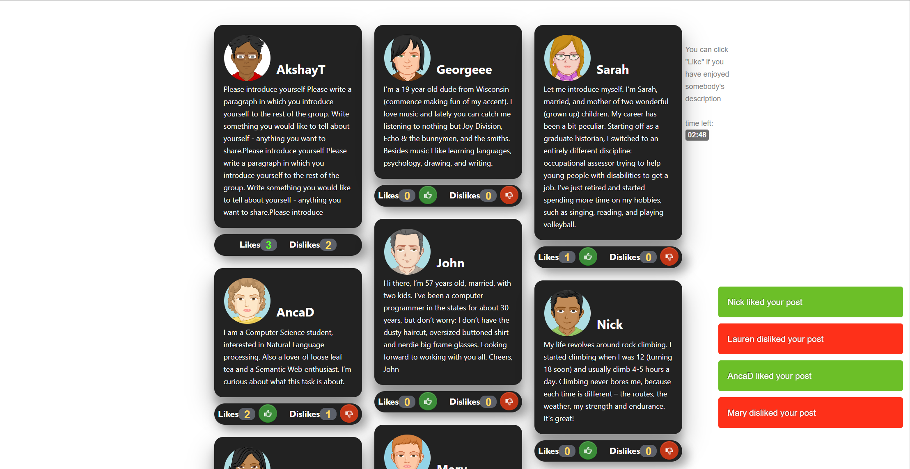

A web-based experimental manipulation of ostracism and social exclusion, designed for research purposes.
View the Project on GitHub smgrady-git/socialmedia
Delete All Code From Line (1 - 31) || Copy & Paste The Code Below above (line 32) In Your File
New Code:
The Social Media Ostracism paradigm is a web-based experimental manipulation of ostracism and social exclusion, designed for research purposes.

On this page you can find:
To try out the Social Media Ostracism paradigm follow one of these links:
Social media ostracism is a type of social exclusion which happens via social media websites, such as Facebook, Twitter, blogging platforms, or forums. In the paradigm, feelings of exclusion are conveyed through the number of "likes" that people receive on their personal profiles during a group intro task.
We recommend that you end the paradigm with an online survey, which contains manipulation checks, dependent measures, and/or connection to subsequent tasks. If the entire study is conducted online and with no interruptions, the participants will be more likely to think that they are interacting with other participants (rather than computer scripts).
Link Section
This is where you enter your Qualtrics Redirect Link
EX:https://osu.az1.qualtrics.com/jfe/form/SV_eWY4YOSQN3iwdFQ?
Avatar Section
This is where you select the number of avatars to appear on the selection screen
EX:57 Avatars
Time Section
This is where you select how long (Mins) the user has to intereact with the simulated accounts
EX:3 Minutes
Add a Condition Section
If you want to add a condition, enter the number of Likes then Dislikes and press the button
EX: 5 likes 6 dislikes
View Conditions Section
This is where you select the conditions that you want in your version
EX:
[9 Likes-0 Dislikes]
[6 Likes-0 Dislikes]
[3 Likes-3 Dislikes]
[0 Likes-6 Dislikes]
Create Button
This is where you get your code based on the previous selections you gave. Copy and paste this code in the Main.js at the specified lines
EX:
....
window.settings = [];
settings.numberofavatars = 82;
settings.tasklength = 180000;
...
Here you can download a sample Qualtrics questionaire, that reads out the transmitted variables, and provides a number of follow-up questions as manipulation check. More information about how to import a questionaire into Qualtrics.
For more customization, such as modified task instructions, or different timing of the paradigm, you can download the source code of the paradigm.
By customizing the code, you can easily make changes to the following parameters:
main.js (from the folder on your computer) in a source code editor (e.g. Notepad) main.js file on your computer (using the editor), according to the instructions documentmain.js documentSimilarly, to edit task instructions, open the file index.html on your computer with an edtitor. Edit the task instructions according to the instructions provided within the document, and save your changes.
To change the group member profiles (descriptions and avatars) open the file profiles.json in an editor, and adjust the contents to your needs.
The following scheme describes a group member, his avatar, description and the likes he receives.
{
"username": "Georgeee",
"avatar": "avatars/others/george.png",
"text": "I'm a 19 year old dude from Wisconsin (commence making fun of my accent). I love music and lately you can catch me listening to nothing but Joy Division, Echo & the bunnymen, and the smiths. Besides music I like learning languages, psychology, drawing, and writing.",
"likes": [45000, 50000, 110000, 150000]
}
According to this code, the group member will be called Georgeee, and he will have an avatar image with the filename george.png placed in the folder avatars, subfolder others. Georgeee will reveive 4 likes overall for his description, at 45s (45000ms), 50s, 110s and 150s.
Note that the personal description needs to be entered without line breaks, as it appears in the default descriptions. To change the number of "likes" in each condition, add or remove timepoints. Make sure that every timepoint is preceded by a single comma. The likes entry should not be empty or left out. If you want to create a member that does not receive any likes, simply change the timepoints to high values (longer than the time of the task).
The avatars used in the previews are not meant for redistribution and thus not included in the version for download. You will thus need to create your own avatars.All avatars have to be 250x250px, placed in the subfolder "others" (located inside the folder "avatars" in the main study folder you extracted on your computer or server). Note that the names of the image files must exactly match the names in the source code (including whether the file extension is upper or lower case).
The task can be easily made available online, as it runs in a browser and has minimal server requirements. Any server that allows hosting of static webpages should work, and offers at least 5 MB of disk space should do, meaning that it can potentially be hosted for free. The files from the computer are transferred to the remote server for example by means of a FTP program.
You can submit a new question question or issue using GitHub.
Wolf, W., Levordashka, A., Ruff, J. R., Kraaijeveld, S., Lueckmann, J.-M., & Williams, K. D. (2014). Ostracism Online: A social media ostracism paradigm. Behavior Research Methods. Advance online publication. doi:10.3758/s13428-014-0475-x